Chapter 4 : SetUp An AEM Instance
Before initiating the instance creation process, let's delve into the distinct roles of two unique instances—author and publish—which are essential for end-to-end development.
-
Author Instance :
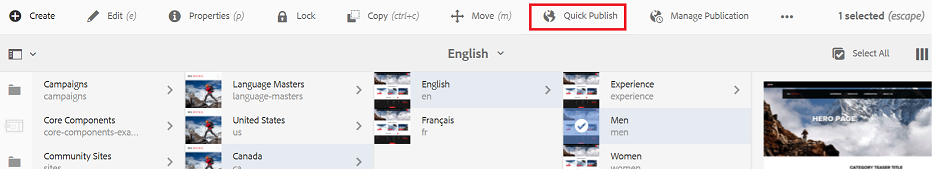- The author instance is exclusively dedicated to content and asset authoring, a responsibility restricted to administrators and content authors.
- Typically, it is hosted on port 4502.
- Creating an AEM instance involves naming the AEM JAR file as cq65-author-p4502.jar.
- Content becomes accessible to the public or end users only after activation or publication.
- The button below facilitates the publishing of content to the publish environment.
-
- The publish instance primarily functions as an end-user website, dedicated to the display of content without content editing or authoring capabilities.
- Typically, it is hosted on port 4503.
- To set up an AEM instance, the AEM JAR file must be named cq65-publish-p4503.jar.
- Content becomes accessible in the publish instance immediately upon activation, publication, or replication from the author instance.
- Unpublishing content is also an option, allowing the removal of content from the live site or restricting its availability to end users.
- The publish instance is commonly referred to as the publisher.
- In scenarios anticipating a large number of users, multiple publishers can be employed for a single author instance to distribute the page access load.
AEM Publish Instance:
-
AEM Instance Creation Process :
Follow the steps below to create an AEM instance:
-
Creating an AEM instance requires both the AEM JAR file and a valid license in the same folder.
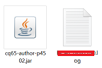
Note : AEM does not offer a free trial, as it is an enterprise application software.
-
- Initiate the process of creating a new AEM instance by double-clicking on the JAR file.
- Once you click on the AEM JAR, the window below will open.
- The initial startup of AEM for the first time will require a substantial duration, approximately 15 to 20 minutes.
- However, subsequent startups will be much quicker, taking a maximum of 5 minutes to launch the instance.
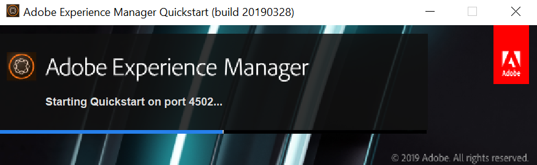
-
- Once the AEM instance has successfully launched, it will automatically open a browser displaying the following page.
- Enter the username and password as 'admin,' which is the out-of-the-box (OOTB) default and can also be modified.
-
Creating an AEM instance requires both the AEM JAR file and a valid license in the same folder.
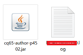
Here are the crucial URLs frequently used while working on AEM. These are provided for reference, and we will delve into them in more detail later.
- Content Page URL for all content/website
pageslocalhost:4502/sites.html/content - Asset/DAM Page URL for all media files:
localhost:4502/sites.html/content - Code Editor URL to access code files:
localhost:4502/crx/de - Package Manager URL to access, build, and install code and content packages:
localhost:4502/crx/packmgr - System Console Bundle to access all bundles or JAR files, helping check their status (install, active, resolved, etc.):
localhost:4502/system/console/bundles - System Console Components to inspect both out-of-the-box and custom components:
localhost:4502/system/console/components - System Console Configurations to examine and manage all out-of-the-box or system-level configurations:
localhost:4502/system/console/configMgr
If a specific AEM version is required for a project, the latest Service Pack can be installed from the Adobe Software Distribution URL:
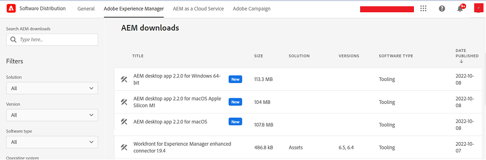Please note that in your case, the version may differ or be higher.
Navigate to the CRX Package Manager to install the 6.5.11 service pack.
Click on the "Update Package" option highlighted in red:
localhost:4502/crx/packmgr
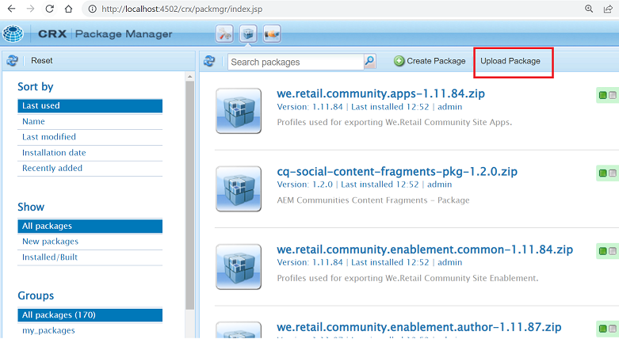
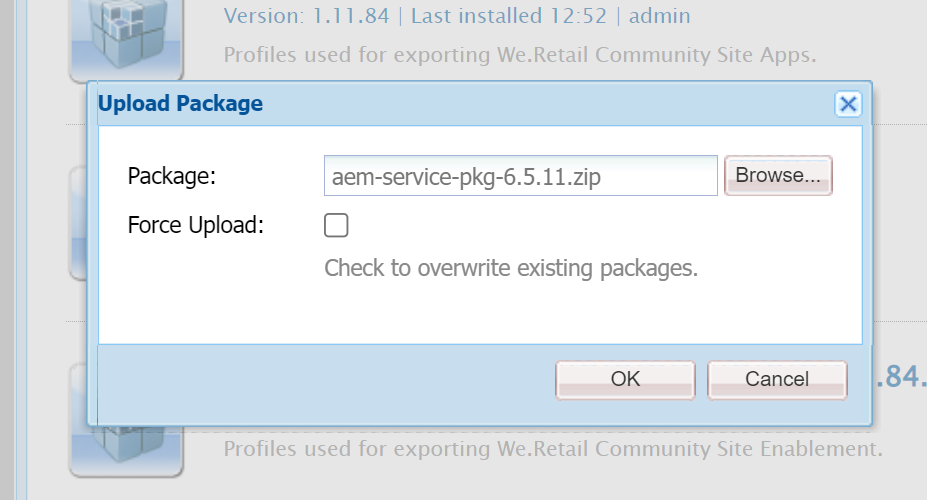
After the installation process is complete, kindly wait for at least 15 to 20 minutes.
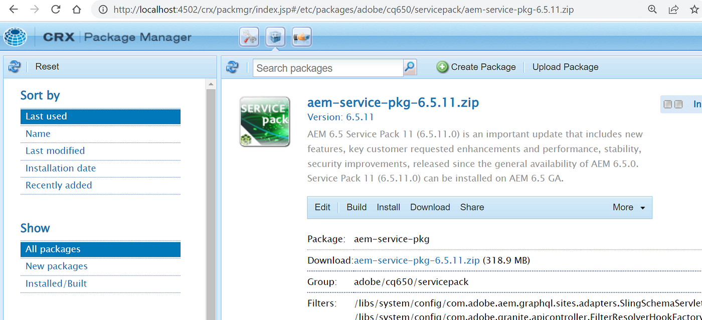
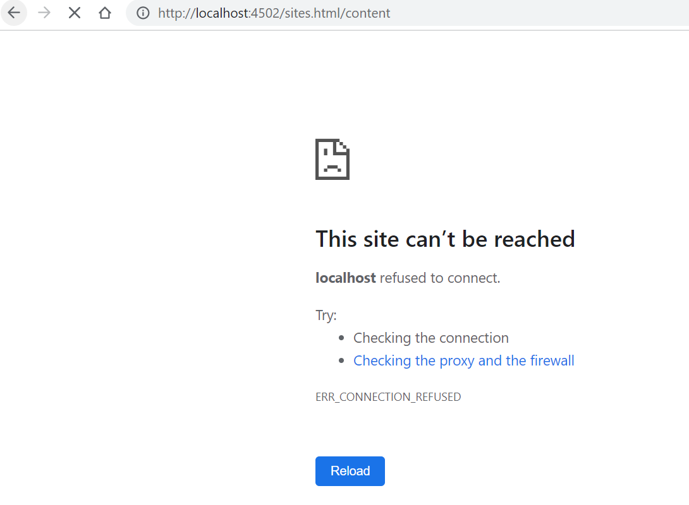
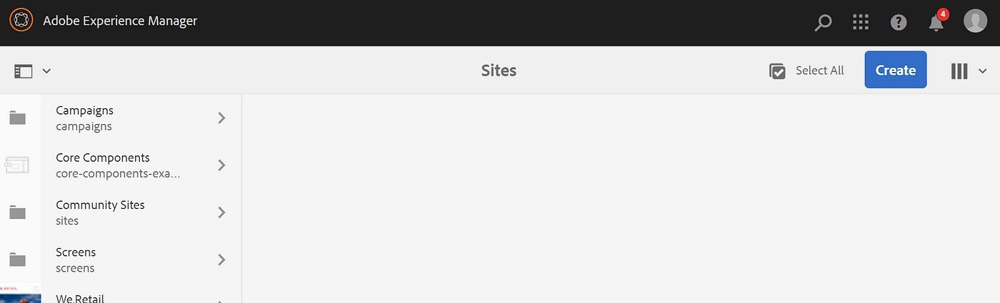
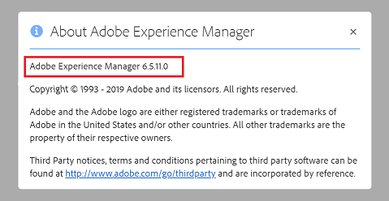
In a similar fashion, after creating the publish folder, you can establish a publish instance. Simply position both the JAR file (cq65-publish-p4503.jar) and the license file in the same publish folder.
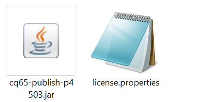
Note: Typically, a publish instance is not created locally unless there is a specific need.
AEM comes with default Core Components and the We.Retail project out of the box, facilitating the exploration of core features and examples.
Further discussion on this will be covered in detail later.